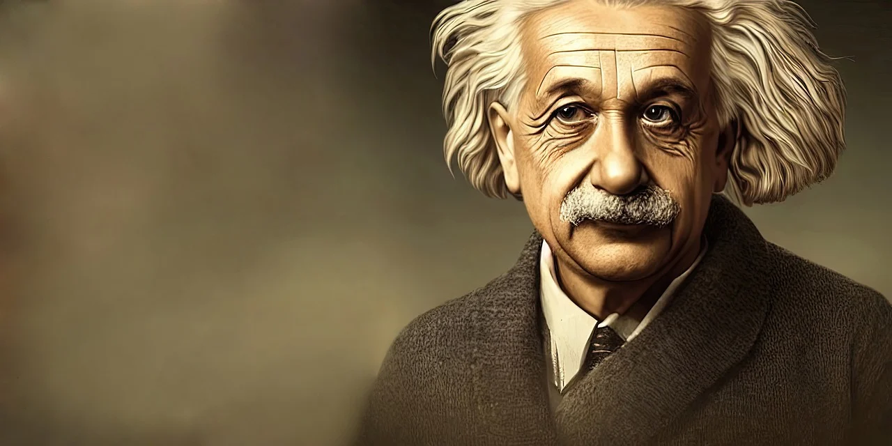

Albert Einstein
Greatest and Most Influential Scientist of all Time

"Peace cannot be kept by force; it can only be achieved by understanding"
Albert's Timeline
- 1879: Albert Einstein is born on March 14 in Ulm, in the Kingdom of Württemberg in the German Empire.
- 1889: Einstein's family moves to Munich, where he attends a Catholic elementary school.
- 1894: Einstein's family moves to Italy, but he stays in Munich to finish his schooling.
- 1895: Einstein attempts to skip high school and apply directly to the Swiss Federal Institute of Technology (ETH) in Zurich but fails the entrance exam.
- 1896: Einstein enrolls at the Aargau Cantonal School in Aarau, Switzerland, to complete his secondary education.
- 1900: Einstein graduates from the Polytechnic School in Zurich, Switzerland, with a diploma in physics and mathematics.
- 1902: Einstein obtains Swiss citizenship and begins working as a patent examiner at the Swiss Patent Office in Bern.
- 1905: Einstein publishes his annus mirabilis papers, which include groundbreaking work on the photoelectric effect, Brownian motion, special relativity, and mass-energy equivalence (E=mc²).
- 1908: Einstein becomes a lecturer at the University of Bern and submits his doctoral thesis to the University of Zurich.
- 1909: Einstein is awarded a PhD by the University of Zurich.
- 1911: Einstein becomes a full professor at the German University in Prague.
- 1914: Einstein returns to Germany to become director of the Kaiser Wilhelm Institute for Physics and a professor at the Humboldt University of Berlin.
- 1915: Einstein publishes his general theory of relativity, which describes gravity as a curvature of spacetime.
- 1919: Astronomical observations during a solar eclipse confirm Einstein's prediction of light bending around massive objects, providing experimental evidence for general relativity.
- 1921: Einstein is awarded the Nobel Prize in Physics for his explanation of the photoelectric effect.
- 1933: Einstein emigrates to the United States due to the rise of the Nazi regime in Germany.
- 1939: Einstein signs a letter to President Franklin D. Roosevelt, urging the United States to develop nuclear weapons research in response to the threat of Nazi Germany.
- 1940s: Einstein becomes involved in civil rights and peace activism, advocating for racial equality and nuclear disarmament.
- 1952: Einstein is offered the presidency of Israel, but he declines.
- 1955: Einstein dies of an abdominal aortic aneurysm on April 18 in Princeton, New Jersey, at the age of 76.